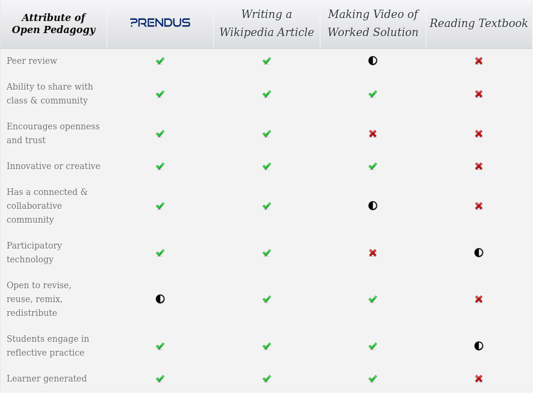

<link rel="import" href="../../bower_components/polymer/polymer.html">
<link rel="import" href="../prendus-ui/prendus-styles.html">
<link rel="import" href="../../bower_components/iron-icon/iron-icon.html">
<link rel="import" href="../../bower_components/iron-icons/iron-icons.html">
<link rel="import" href="../../bower_components/iron-icons/av-icons.html">

<dom-module id="prendus-oer">
    <template>
      <style include ="prendus-styles">
        h1,h2{
          text-align: center;
          padding-top: 2vh;
          margin-bottom: 2vh;
        }
        .section-heading{
          padding-top: 5vh;
          padding-bottom: 4vh;
        }
        .section-column-layout{
          display: flex;
          align-items: center;
          justify-content: space-around;
          height: 100%;
          flex-direction: row;
          font-size: 18px;
          line-height: 150%;
          text-justify: auto;
          padding-bottom: 5%;
        }
        .comparison-flex-layout{
          display: flex;
          align-items: center;
          justify-content: space-around;
          height: 100%;
          flex-direction: row;
          text-justify: auto;
        }
        @media screen and (max-width:700px) {
          .section-column-layout { flex-wrap: wrap;  }
          .three-column-flex-layout:first-child { flex-basis: 100%;}
        }
        #OER
        {
          background-color: var(--prendus-off-white);
        }
        #assessment{
          background-color: var(--prendus-primary-color-light);
        }
        #affordability{
          background-color: var(--prendus-primary-color);
          color: white;
        }
        .three-column-flex-layout{
          text-align: center;
          padding-left: 5%;
          padding-right: 5%;
        }
        .two-column-flex-layout{
          padding-left: 5%;
          padding-right: 5%;
        }
        .bigIcon{
          --iron-icon-height: calc(15em - 6vw);
          --iron-icon-width: calc(15em - 6vw);
          color: var(--prendus-primary-color)
        }
        #header {
          padding: 12em 0 12em 0 ;
          /*background-color: rgba(0, 0, 0, 0.75);*/
          color: white;
          background-attachment: fixed,		fixed,							fixed;
          background-image: linear-gradient(rgba(100,100,100,0.8),rgba(100,100,150,0.8)), url("../../images/open-pedagogy.png");
          background-position: top left, center center,	center center;
          background-size: cover;
          overflow: hidden;
          position: relative;
          text-align: center;
          background-repeat: no-repeat;
        }
        #huge-text{
          font-size: 15vw;
          padding-bottom: 10vh;
        }
        #open-pedagogy-comparison{
          width: 80%;
          margin-bottom: -5vh;
        }
      </style>
      <section id="header">
        <div>
          <span class="icon major fa-cloud"></span>
          <h1>Prendus <br> & <br> Open Education Resources</h1>
        </div>
      </section>
      <section id="assessment">
        <h1 class="section-heading">Assessment Tools to Adopt OER with Confidence</h1>
        <div class="section-column-layout">
          <div class="three-column-flex-layout">
            <iron-icon class="bigIcon" icon="chrome-reader-mode"></iron-icon>
            <h2>Homework tools</h2>
            <p>
              Students use Prendus for homework. Students can create, review, and take exam-level practice questions.
              Instead of homework wasting away after being completed, students create a tangible, reusable result while learning.
            </p>
          </div>
          <div class="three-column-flex-layout">
            <iron-icon class="bigIcon" icon="av:recent-actors"></iron-icon>
            <h2>Custom resources</h2>
            <p>
              As students create, review, and take questions, the resources become customized to the class.
              Since resources are user-generated, the class is customized not only based on the instructor,
              but also to the students in the class for the semester.
            </p>
          </div>
          <div class="three-column-flex-layout">
            <iron-icon class="bigIcon" icon="assessment"></iron-icon>
            <h2>Analytics</h2>
            <p>
              As students create, review, and take questions, the resources become customized to the class.
              Since resources are user-generated, the class is customized not only based on the instructor,
              but also to the students in the class for the semester.
            </p>
          </div>
        </div>
      </section>
      <section id="affordability">
        <h1 class="section-heading">An Affordable Blend of Practical and Pedagogical</h1>
        <div class="section-column-layout">
          <div>
            <div id="huge-text">
              $10
            </div>
          </div>
          <iframe class="three-column-flex-layout" width="560px" height="315px"  src="https://www.youtube.com/embed/qANw5mYHzio" frameborder="0" allowfullscreen></iframe>
        </div>

      </section>
      <section id="comparison-table">
        <h1 class="section-heading">Going beyond a textbook replacement</h1>
        <div class="comparison-flex-layout">
          
        </div>
      </section>
    </template>

    <script type="module" src="prendus-oer.ts"></script>
</dom-module>
